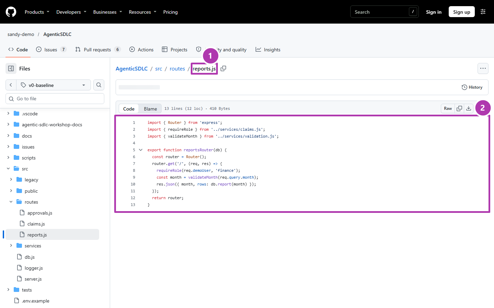
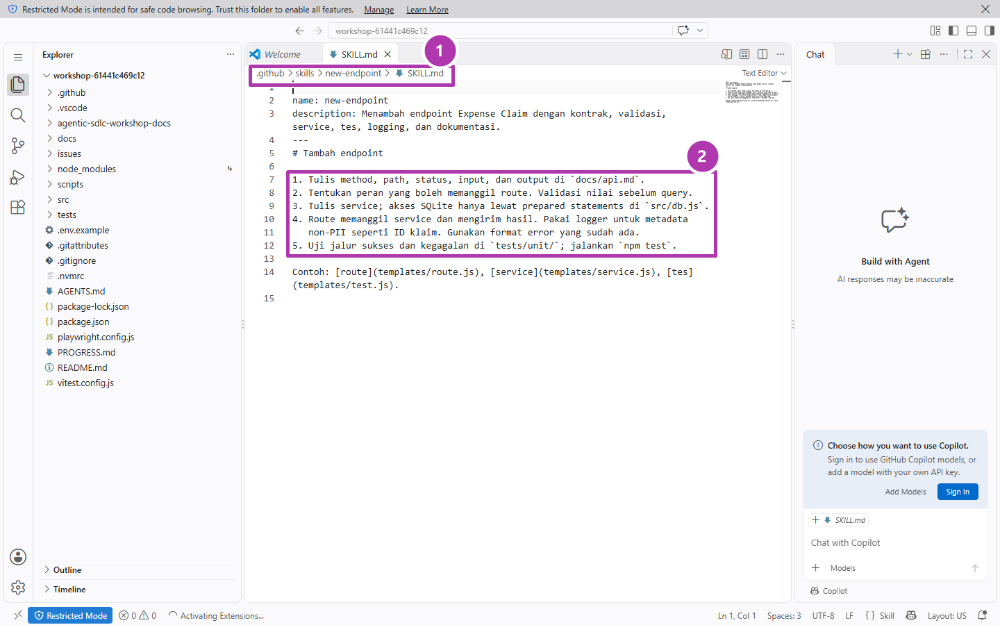
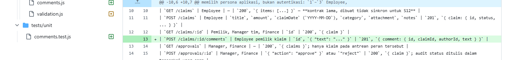
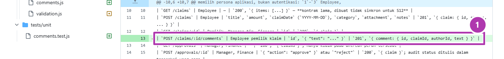
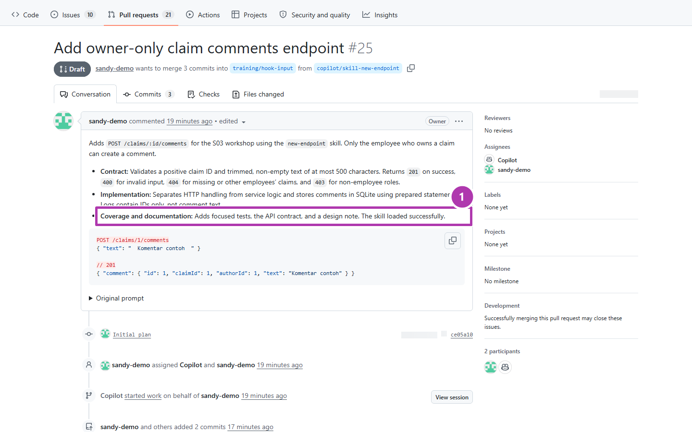
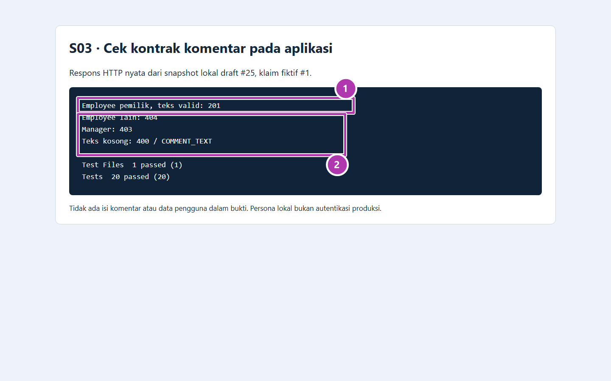
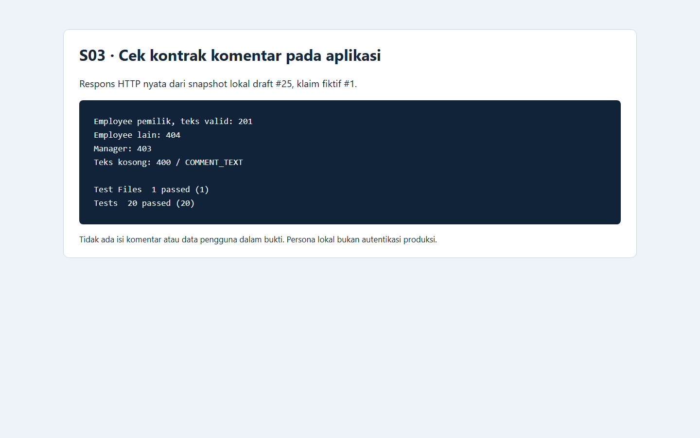
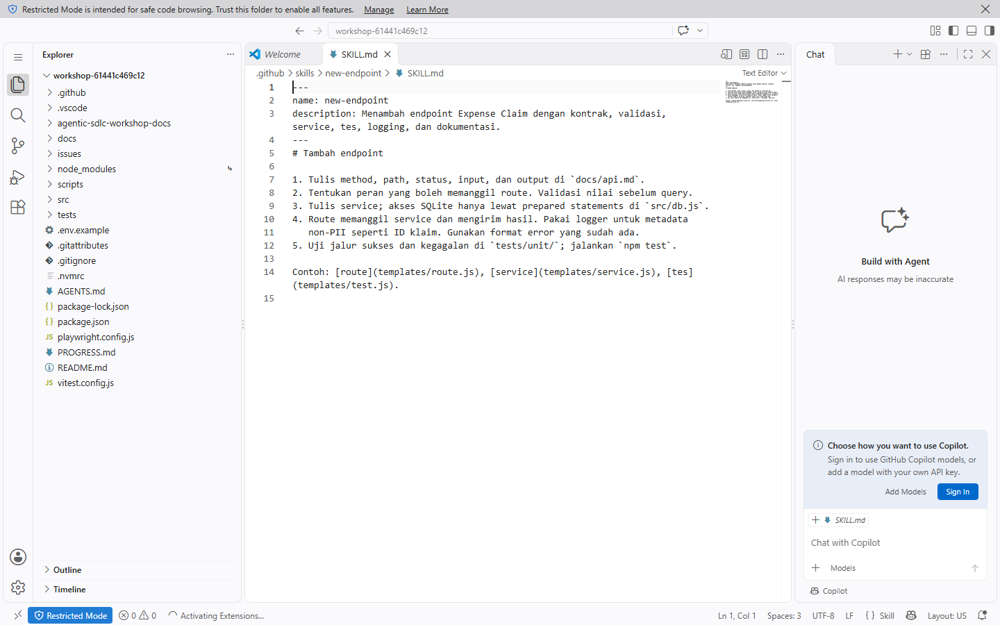
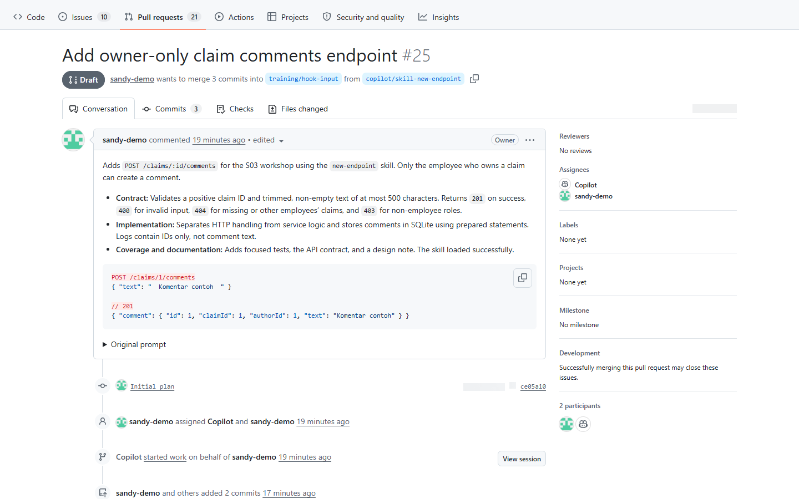

S03 · Level 1 — Inner loop
Pakai skill untuk endpoint baru
Minta Copilot memuat skill new-endpoint dan merencanakan komentar khusus pemilik: validasi, service, query SQLite berparameter, log ID saja, dokumentasi, dan tes. Checkpoint Chat berhenti di rencana; implementasi dan tes ada di draft latihan terpisah.
Status latihan: Endpoint komentar sudah dibuat dan CI lulus pada draft PR #25. Draft belum digabung; foto aktivitas pemuatan skill di VS Code belum disimpan sebagai bukti.. Lihat diagram interaksi · Ikuti langkah · Cek hasil · Langkah live · Ulangi dari awal.
Masalah yang dihadapi
Bayangkan Yoga menerima laporan: komentar untuk klaim #21 belum terlihat. Pembuatan klaim sudah punya log, misalnya { "event": "claim.created", "claimId": 21 }. Route laporan sudah memvalidasi input, tetapi belum punya log sukses seperti itu. Untuk komentar, Yoga ingin { "event": "claim.comment.created", "claimId": 21, "commentId": 1 } tanpa isi komentar. Angka ini hanya contoh.
Kerugian: Catatan klaim dibuat tidak membuktikan bahwa komentar tersimpan. Tanpa nama aksi dan nomor klaim yang konsisten, Yoga sulit menelusuri laporan pengguna.
Masalah pada baseline
src/routes/reports.js
Lihat potongan atau catatan sumber
res.json({ month, rows: db.report(month) }); // validasi ada, log belum adaSolusi dan alur
Minta Copilot memuat skill new-endpoint dan merencanakan komentar khusus pemilik: validasi, service, query SQLite berparameter, log ID saja, dokumentasi, dan tes. Checkpoint Chat berhenti di rencana; implementasi dan tes ada di draft latihan terpisah.
Alur kerja ringkas
Rani di VS CodeMinta rencana komentar
Hasil: Checkpoint hanya meminta Copilot membaca skill dan membuat rencana, tanpa mengubah file.
Copilot ChatMuat skill, buat rencana
Hasil: Read skill new-endpoint menunjukkan skill dipanggil. Rencana memuat validasi, service, penyimpanan, log, dokumentasi, dan tes.
Draft PR #25Cek pemilik, simpan
Hasil: Kode di draft terpisah memeriksa pemilik dan isi sebelum service menyimpan komentar ke SQLite. CI draft ini lulus.
API dan logBalas 201, catat ID
Hasil: Pemilik mendapat 201 saat komentar tersimpan. Akses orang lain ditolak. Log menyimpan ID, bukan teks komentar.
Diagram interaksi
Pisahkan rencana di Chat dari contoh endpoint yang sudah diuji.
Checkpoint di VS Code: rencana saja
-
RaniVS Code keCopilot ChatPanel Chat VS Code
-
Copilot ChatPanel Chat VS Code keRaniVS Code
Contoh terpisah: implementasi draft PR #25
-
Pengguna demoTes lokal keAPI dan serviceAplikasi draft PR #25
-
API dan serviceAplikasi draft PR #25 keSQLiteDi proses aplikasi
-
SQLiteDi proses aplikasi keAPI dan serviceAplikasi draft PR #25
-
API dan serviceAplikasi draft PR #25 kePengguna demoTes lokal
-
API dan serviceAplikasi draft PR #25 kePengguna demoTes lokal
Langkah demo
Yang kamu lakukan
- Di VS Code tekan Ctrl+P, ketik .github/skills/new-endpoint/SKILL.md, lalu baca lima langkah untuk membuat endpoint atau alamat API baru.
- Pilih Chat → Agent dan minta Copilot memuat new-endpoint lalu membuat rencana komentar khusus pemilik. Buka rincian aktivitas dan cari Read skill new-endpoint. Berhenti di rencana; jangan edit kode pada checkpoint ini.
- Untuk melihat implementasi yang sudah ada, buka tautan Files changed pada draft PR #25 di bawah. Cocokkan kontrak, validasi, service dan SQLite, log ID saja, serta tes. Buka hasil CI secara terpisah; foto Chat bukan bukti tes.
Issue adalah tiket kerja. PR (pull request) adalah usulan perubahan; jika masih draft, hasilnya belum digabung. Files changed atau Changes menunjukkan file yang berubah. Checks menunjukkan hasil tes otomatis.
Ikuti alur GitHub dari tiket sampai review jika latihanmu memakai PR. Tautan contoh di bawah hanya membuka hasil yang sudah ada.
Contoh dan cara cek hasilnya
Coba aplikasi awal, sebelum ada komentar
Jalankan npm run demo:before di terminal pertama. Di terminal PowerShell kedua, jalankan perintah di bawah sebagai pemilik klaim #1. Baca detail klaim berhasil (200), tetapi alamat menambah komentar belum ada (404). Ini hasil versi awal, bukan hasil draft.
$detail = curl.exe -sS -o NUL -w '%{http_code}' -H 'x-demo-user: 1' http://127.0.0.1:3000/claims/1 $comment = curl.exe -sS -o NUL -w '%{http_code}' -H 'x-demo-user: 1' --json '{"text":"Catatan latihan"}' http://127.0.0.1:3000/claims/1/comments "GET detail: $detail; POST komentar: $comment"
Perbesar S03-before-annotated.pngSumber GitHub · 1. Buka src → routes → reports.js pada tag v0-baseline. · 2. GET yang ada memeriksa peran Finance dan memvalidasi month. File ini bukan hasil dari skill; perhatikan batas route dan validasi sebelum menambah endpoint baru. Baca lima langkah skill new-endpoint
Tekan Ctrl+P lalu ketik jalur file di bawah, atau baca file yang sama lewat tautan. Cari lima hal: kontrak API, validasi peran dan input, penyimpanan lewat service, route dan log, serta tes. Ini resep untuk menyusun rencana.
Baca skill new-endpoint di GitHub
.github/skills/new-endpoint/SKILL.md
Perbesar S03-vscode-skill-source-annotated.pngScreenshot nyata VS Code Web lokal · v0-baseline · 1. Di VS Code, buka path skill new-endpoint. · 2. Baca urutan kontrak, peran, service, route/log, dan tes. Ini isi file, bukan notifikasi skill dimuat di Agent Mode. Muat skill dan buat rencana di Chat
Di folder latihan, buka Chat → Agent dan kirim prompt. Buka rincian aktivitas dan cari Read skill new-endpoint. Nama skill di prompt saja bukan bukti dimuat. Berhenti setelah rencana ditulis; implementasinya diperiksa di langkah berikutnya.
Muat skill new-endpoint sebagai aksi pertama. Jika berhasil, buat rencana POST /claims/:id/comments: hanya pemilik, validasi teks, service dan SQLite, log ID saja, dokumentasi, dan tes. Jangan edit kode atau menjalankan workflow.Lihat hasil implementasi di draft PR #25
Draft PR #25 sudah berisi kode komentar, tetapi belum digabung. Files changed (atau Changes) menunjukkan file yang ditambah dan diedit. Cocokkan lima langkah skill dengan kontrak API, cek pemilik dan teks, service dan SQLite, log ID, serta tes akses.
Lihat file yang berubah di draft PR #25

Perbesar S03-after.pngSumber GitHub · Kontrak POST komentar khusus Employee pemilik pada draft #25. Periksa tes endpoint komentar
Buka hasil CI GitHub untuk melihat tes yang sudah lulus. Jika hendak mengulang tes fokus, jalankan perintah di Terminal pada folder yang berisi draft PR #25, bukan versi awal. Pemilik harus berhasil dan pengguna lain ditolak.
Lihat hasil CI untuk draft PR #25
npm test -- comments.test.js
Perbesar S03-after-annotated.pngSumber GitHub · 1. Baca method, pemilik, status 201 dan bentuk respons. Route dan service di draft yang sama diuji secara terpisah. Bedakan hasil di GitHub dari bukti di VS Code
Di Conversation, coding agent menjelaskan apa yang diubah pada draft GitHub. Itu bukan tangkapan aktivitas Chat VS Code. Pemuatan skill dan rencana sudah terlihat di Chat; foto yang menampilkan baris pemanggilan skill belum diarsipkan.
Baca ringkasan pekerjaan di draft PR #25

Perbesar S03-cloud-skill-annotated.pngSumber GitHub · 1. Baca laporan skill pada draft #25. Ini pengakuan dari sesi cloud yang benar-benar menghasilkan kode, bukan indikator skill di VS Code.
Cek hasil
Versi awal belum punya POST komentar (404). Pada draft PR #25, pemilik dengan teks valid mendapat 201, karyawan lain mendapat 404, Manager mendapat 403, dan teks kosong mendapat 400/COMMENT_TEXT. Ada 20 tes fokus komentar yang lulus lokal; CI GitHub juga lulus. Foto Chat yang masih pending bukan bagian dari implementasi ini.
Bukti latihan terverifikasi

Perbesar S03-endpoint-runtime-annotated.pngLangkah live
Prasyarat dan petunjuk pengambilan bukti
Untuk checkpoint VS Code, cukup muat skill dan buat rencana POST /claims/:id/comments tanpa edit kode. Untuk membaca hasil implementasi dan tes, gunakan draft PR #25 yang terpisah.
S03-01-skill-loaded.pngDi Chat → Agent, buka rincian yang menampilkan Read skill new-endpoint dan rencana. Ambil hanya area Chat yang menunjukkan pemanggilan skill; foto prompt saja tidak cukup.
Sebelum dan sesudah
Geser pembanding atau gunakan tombol panah pada kontrol. Kedua gambar bisa dibuka terpisah.


| Bagian | Sebelum | Sesudah / target |
|---|---|---|
| Perilaku | GET detail sudah ada; POST /claims/1/comments masih HTTP 404. | Endpoint komentar sudah dibuat dan diuji di draft PR #25, tetapi kodenya belum digabung ke versi awal. |
| Bukti visual | Ada tangkapan lokal. | Ada tangkapan GitHub. |
| Keputusan | Peserta membaca keadaan awal. | Manusia memeriksa hasil sebelum meneruskan. |
Manfaat
- Prosedur bisa dipakai berulang tanpa menyalin prompt panjang.
Bukti dan sumber
Template issue S03 · Data latihan dan pengukuran.
 Perbesar S03-local-result.png
Perbesar S03-local-result.png

Perbesar S03-endpoint-runtime.png

Perbesar S03-vscode-skill-source.pngBukti GitHub live
Draft #25 menambah route, service, penyimpanan prepared statement dan tes. Agent melaporkan skill new-endpoint dimuat di cloud, bukan di VS Code.


Perbesar S03-cloud-skill.png1 layar yang belum direkam
S03-01-skill-loaded.png
Ulangi latihan
Tinggalkan checkout yang sudah diedit dan buat checkout baru dari v0-baseline. Jangan pakai git reset --hard atau git clean pada direktori kerja bersama.
npm run reset -- --fresh